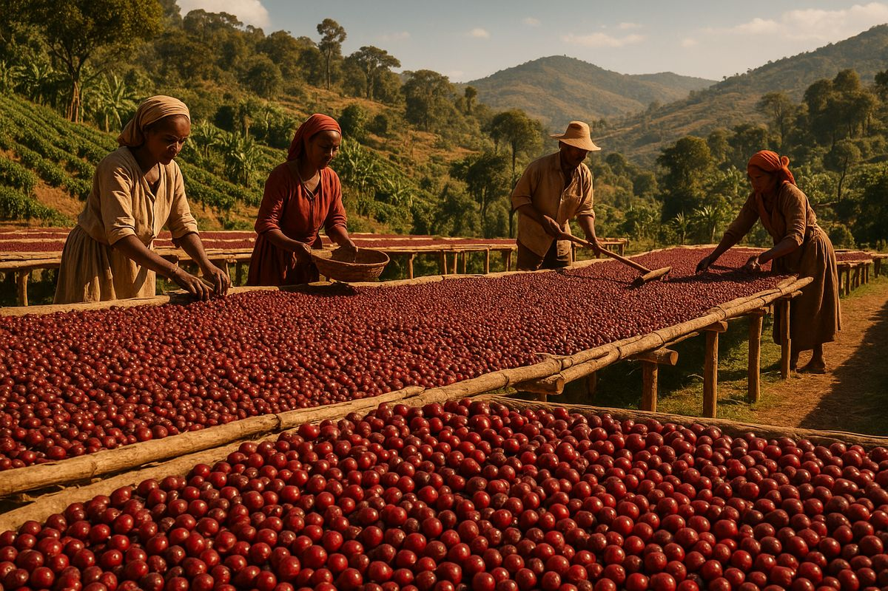

Berawal dari hamparan subur di lereng Gunung Manglayang, CoffCo lahir dari sebuah dedikasi untuk mengangkat potensi alam Priangan. Kami bukan sekadar penadah, melainkan pengelola perkebunan mandiri yang terintegrasi langsung dengan para penggarap lahan.
Selama ini, mayoritas kopi unggulan kami hanya berakhir sebagai komoditas mentah (green beans). Kini, kami mengambil langkah maju. Dengan mengolah hasil panen menjadi produk kemasan *roast beans* dan bubuk premium yang siap seduh, kami memastikan setiap cangkir yang Anda nikmati membawa dampak ekonomi yang jauh lebih besar dan adil bagi mereka yang menanamnya.